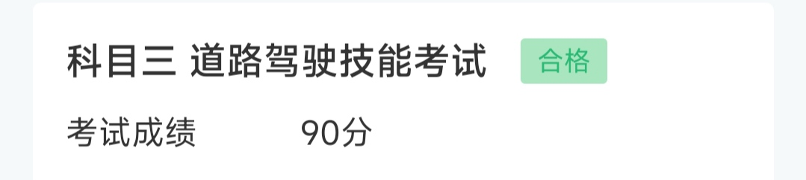

科目三记事
前言
这个暑假压力最大的事，莫过于科目三补考。
想来，考驾照已经历一周年（这玩意都有一周年😅），科一科二一次通过，科三却是意外失败了。寒假，第一次用教练车开车上路。经过几天的训练，我开完一条线路已经不用教练提醒，而且教练在考试前和我说：“放心，应该是没有问题的。”我觉得我很行🥰，交什么钱去模拟考试，智商税，直接上战场！
说明一下我所在的考场参加模拟考试的优待
- 随机的安全员带你开所有考试线路
- 在候考的时候会知你考哪一条线路，而不是上车前才告诉你
- 候考时提供该线路开车的视频
- 靠边停车项目可使用前方的雪糕筒作为参考物
安全员不搞你，比如上车前偷偷开远光灯，放下手刹等🤬
科三初体验
考试要求不携带手机，只能坐在候考室干等。虽然说应该没什么问题，但还是要一番瞎紧张。可以出去考试了，安全员看了身份证后，丢下一句“一号线”就自顾自地上车了。按照惯例，按三个按钮后上车，关门，调座位。安全员来了句：“可以了就按指纹。”
欸，是一号线吗？刚刚紧张，没怎么听清。之前教练说，有些安全员很鸡贼，你不问几号线，他就不会告诉你。
“是一号线吗？”
“…”
“一号线？”
“…”
他不理我，嘤嘤嘤😖。
当时紧张，猪脑宕机，与安全员交流一些必要的内容应该可以的吧。
显然，为防止作弊，上车后不能有任何交流。这应当属于常识性内容，正如学校考试不能和监考员交流，或许教练就没告诉我？
调好座位，检查有没有被安全员坑后，按下了指纹。
“下面将进行模拟夜间使用灯光的考试…”
“请起步”
“前方路口右转…”
不错，还算顺利，直线行驶也过了。而且车上有空调，缓解了我紧张的情绪。
哟西，前面是第一个十字路口，右转后两个车道均可通行。但是左车道更方便，教练也建议我走左车道。
没车，好，松开刹车溜过去就行，诶嘿。
有一个人前来买瓜（指有摩托）
嘶，不妙，路口不能停车，只能略微踩点刹车了。但愿创不到他。
啊，身体突然前倾，被安全员踩刹车了，祭。
“你一定要走那条车道的咩，见到人就快快打死右走左边车道。”
😟😟😟，“哦”
（猪脑宕机中…）“那现在怎么搞？”
“下车，坐后面。”
（安全员把车开回起点）
“再来。”
又到了那个垃圾十字路口，防止死在这里两次，果断走右车道，然后再变道回左车道。
…
“前方请靠边停车”
哇趣，总算最后一个项目了，一路上都没啥问题。
（打右转向灯，并尝试将右边实线对准空调口的中间）
🤯，危
这个空调口怎么是方形的！！！明明教练车是圆形的！！！教练坑我😭
没办法，只能对准方形空调口的中间了。
嘶，这个空调口的导风板怎么是在最右边，那车就对左边一点？
（汽车缓慢蠕动中）
差不多了，刹车，手刹，P挡，下车，一气呵成，要的就是自信。
“你看看离得有多远”
嗯，离右边线有点远，应该在50cm以内吧？
“过不了？”
“不行，不及格。”
😨😭🤡
（安全员开车一骑绝尘）
MD，浪费老子打车费。
拿出存放的手机，唉，下次还要来补考，交的押金就不退了吧。（请记住这句话）
二战
暑假，我胡汉三又回来了
问了下身边考过驾照的人，他们的科目三都氪金练了模拟车，貌似就我很勇不去练(～￣▽￣)～
又一次跟着教练来到考场。
这里，没什么大变化。还是那些平整的柏油马路，见证了一次次成功与挂科。路旁，有宿舍。衣服随意地挂在窗前的防盗网上，随风飘扬，似是和我说Hello，又似是，祝福。它们，不能是和我说ByeBye么？希望我们再也不要见。住在宿舍里的人，对这些路上的教练车，考试车，模拟车，早已麻木了罢。他们的多数毕竟是不用考驾照的，大概他们都考过了罢，早已面对过我遇到的压力。这会儿，没人在窗台上看，或许他们在厂里做着那些日复一日的重复性工作。我与他们唯一可能的交集，就是他们通过窗户看我一眼，而后又像两条交叉线一样，二者愈走愈远。他们，能够从窗户里看很多练车的人一眼，冬去春来，沉舟侧畔千帆过，病树前头万木春。他们也是柏油马路，是见证者，见证成功与失败，喜悦与悲伤。
“一切都会过去。”他们如是说。“所以，为何对科目三如此紧张呢？”他们疑惑。
好吧，我在无病呻吟😅。
不过我确实紧张，因为我要吸取教训，准备氪金。氪了还不过，不就浪费360￥模拟考费
线路还是那些线路，不过靠边停车时可以对准雪糕筒了。方向盘中心对准雪糕筒，就刚好停好车。
不过，貌似这招也不是很灵。有一次，我看着对准中间了，下车看却发现超过50cm？？？
同行练车的人都是第一次考，他们都不打算去模拟考试，有我当年的自信👍。希望他们能一次过呗，不要让这种黑考场赚钱🤬。
好，到了模拟考试的日子。靠边停车一直是心魔，对雪糕筒这招时灵时不灵。去到服务大厅，报上名字后，工作人员还掏出了收我360￥的收据，怪正式的咧。不过收据反手递给安全员，我都没摸到😅。
毕竟不是考试，而且还氪了金，这次安全员还挺優しい（温柔），全程都比较轻声细语。一路开下来没啥问题，又到了天杀的靠边停车。
那就对准方向盘中间咯。
嗯，差不多了，停车。
“你都根本没对准，现在雪糕筒刚好对准我中间。”
“可是我看到是对准我方向盘中间的啊。”
“不信你就下车看。”
…
好像，确实离右边线挺远的。
（上车，再调整）
“我真的看到是对准的。”
“你要硬说对准那我也没有办法的呐，开到最前面看，身体坐直。”
emmm，调了一下坐姿，视角确实不大一样了，原来我一直靠右坐😅
这下真的对准方向盘中间了，并且得到了安全员的认可🥰
第二天，如期考试！
又坐进了熟悉的候考厅，但这次可以在候考厅就知道考哪条线了🥰。专注看路线视频吧，专注就不会紧张了。
盯~~~
“啪啪啪”，有人在拍掌，是一个穿着警服的女人。一头短发，加上尖尖的脸，显得精神。瘦，如果穿上便服，我可能会认为她是一个有一定阅历的人民教师。
“好，首先先祝在座各位考试一帆风顺，每个人都能顺利上岸。”
（鼓掌…）
“考试前请各位卸下身体的负担，厕所在那边。”
（笑）
“科目三，其实不难。最重要的是各位收拾好心情，不要紧张，这样才能考过…”
接下来就是讲一些考试的注意事项。想不到360￥还附带安慰服务👍。在听她讲话后的一段时间里，我的内心确实平静了下来。
但，我是个不争气的人＞︿＜
这算是我的老毛病。工作人员点到名的人就出去考试，我会不自觉地集中注意力听，生怕我听漏了我的名字。于是，每喊一次，我都会紧张一下😟。
“XXX，XXX”
还没到我，是不是过几个就到了（我是第一批考的）
“XXX”
惊！哦，不是我。
那么，还是来谋划一下靠边停车吧（以下是博弈时间~）
根据模拟考的经验，我好像总是停得比较远。要不要雪糕筒对准方向盘略微左边一点的地方呢？
欸，要是对太左了，压线就直接祭。离右边线远一点（小于50cm）才扣10分呢。
欸，要是对准中间，依然离太远的话，又重蹈覆辙😨
欸，要是对太左了…
要不要偏左？要不要偏左？要不要？要不要…
（面对未知时，我会设想最坏的结果，先在大脑预演一遍，防止坏结果发生时接受不了。或者也可以称之为悲观主义？）
CaO，不管了，考不过就下次再来，360￥也不算什么钱。
但是，这并不能完全消解我的紧张。
算了，还是看线路吧。
盯~~~
“XXX”
这会儿终于到我了。当我起身走动的时候，我倒是不大紧张了。
按按钮，上车，一气呵成。
“请起步”
…
“前方请靠边停车”
如果这时候测我的心率，绝对是160+BPM
踩点刹车，欸，对，就这样慢慢蠕动。
嗯，差不多了，再微微对左边一点…再微微调正一下车头…
刹停，下车。
“好，进里面签名。”
ohhhhhhhhhhhhhhhhhhhhhhhhhhhhhhhhhhhhhhhhhhhhhhhhhhhhhh

签名，拿手机，赶紧run。
SB储物柜，上次交的押金没及时点退款就没了啊啊啊啊啊啊啊
我根据当时的回忆写成了这篇文章，对话部分略有艺术加工，不过事件都是真实发生的。